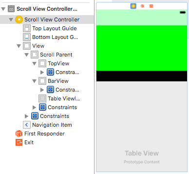

前言
继续使用swift来实现一些常见的页面，本篇要实现的页面效果如图：
之所以选择实现这样的效果，是不经意间看到一篇blog, 它不是使用TableView的header来实现，而是纯粹使用了UIScrollView。因此，为了实现这样的效果，需要对contentOffset有较深刻的认识，正好可以加深对ScrollView的理解。此外，该实现还有几个问题，需要修复。
该文需要翻墙，为了便于查看，这里把原文的效果显示如下：
原文的示例工程在此：DParallexScrolling
定义实现的效果
首先，原文的实现效果有2个问题：
- 当tableView滚动到底部，再往上滚动的时候，黑色菜单栏会向上滚动，没有固定住
- 当在imageView上向上滚动后，黑色菜单栏也会一并滚动到屏幕外，而不是始终固定在顶部
除了修复上述两个问题，我还添加了导航栏随着scrollView向上／下滑动而隐藏／显现，但是这一功能是使用了[LTNavigationBar]——因为其已经有了Swift版本，就拿过来用了。
页面元素的布局
新建工程，选择master-detail模版，然后修改，布局如图：

关于ScrollView的约束，需要注意：
- ScrollView和SuperView的约束，控制ScrollView本身的位置
- ScrollView的Subview的约束，控制ScrollView的contentSize
- ScrollView的Subview的约束，必须要添加到ScrollView的某一个SuperView上
在Storyboard布局，如果约束不足或有错，系统会提示，再根据提示慢慢修改。
关于TableView的实现，这里不是重点，故略过。
scrollViewDidScroll的实现
为了实现最终的效果，必不可少的就是要实现代理： scrollViewDidScroll(_ scrollView: UIScrollView)。 在该方法中，判断不同滚动方向上，ScrollView和TableView的contentOffset。
以向上滑动TableView为例，当黑色View没有到顶部的时候，控制黑色及绿色View跟随ScrollView一起滚动。当黑色View到达顶部的时候，ScrollView的contentOffset就不应该改变，相应的，TableView开始滚动。而向下滑动TableView的时候，首先检查TableView的contentOffset，如果TableView见顶了，就需要带动ScrollView滑动即设置ScrollView的contentOffset。
与此同时，我们还添加了根据NavBar和StatueBar计算ScrollView的最大Offset，便于以后的扩展。
关于导航栏的隐藏/显现，前文已说是使用了某开源库，这里就不浪费笔墨在如何使用上了。
原文问题的解决
问题1
该问题只需要当TableView见底的时候，设置ScrollView不能滑动。需要注意的就是在某个时刻把ScrollView可以滑动的属性打开，否则页面就无法滑动了。
问题2
该问题也是设置ScrollView的滑动属性“暂时”解决。之所以是“暂时”，是因为原本希望的效果应当是滑动绿色View，当黑色View到达顶部的时候，TableView继续向上滚动。而现在的版本，黑色View到达顶部后，TableView不会有滚动（如下图）：
要实现这一效果，未实践的思路是：此刻固定黑色View和ScrollView的superView的位置关系，同时让tableView和ScrollView一起滚动。这样做的话，还需要很多额外工作，而且感觉在自己实现一个TableView，因此没有继续展开。
最后附上工程地址：ParallalScroll